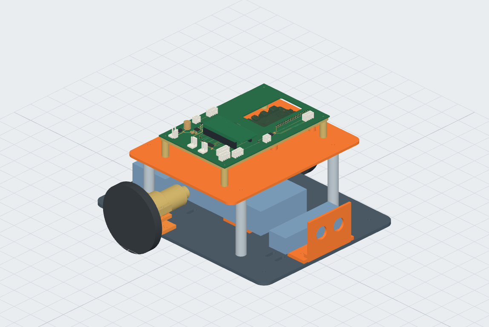

A repeatable platform for release testing.
Axiom Rover is a reusable two-wheel-drive robot design: a fixed Shrike / RP2040 + ForgeFPGA actuator base, a removable compute tray, an independent motor-power stop and a wheels-raised test stand.
It is intended to collect evidence for named AxiomOS releases and fault cases. This is an independent hardware repository; it does not implement or validate the control firmware, or prove AxiomOS correct under every condition.
Inspect the 3D assemblyDesign documentation
The Rev B design
Dimensions and electrical values below describe the design intent. Purchased-part fit and operating performance have not been measured.
- Chassis
- 200 × 260 × 4 mm PETG deck, removable enclosure and compute tray.
- Carrier board
- 160 × 100 × 1.6 mm, two layers, with a cooler aperture.
- Compute & controller
- Pi 5 below the carrier at a nominal 16.5 mm gap. One Shrike R0.4 plugs into two 19-position sockets above.
- Drive
- Two ThinkRobotics MOT3001-6V60RPM encoder motors; Pololu 3690 wheels, 80 × 10 mm with 4 mm D-bore collets.
- Motor driver
- Onboard DRV8833 (PWP package). Current regulation targets 1 A per channel; current and thermal behavior require bench measurements.
- Sensor interfaces
- HC-SR04 distance sensor, left/right wheel encoders and a 3.3 V IMU interface. Delivered pin order and sensor behavior need verification.
- Power & stop
- Separate host, controller and sensor supplies; external regulated 6 V motor source, fuse and normally-open stop relay.
- Qualification targets
- Indoor level-floor use, mass at or below 2 kg, initial motion below 0.2 m/s. These are targets to qualify, not demonstrated capabilities.
Release status: review only
Fabrication: not released. Powered motion: not released. Physical tests: not run.
Nothing has been purchased, fabricated, flashed or physically tested in this repository. CAD, electrical checks and browser checks are design evidence; they do not establish physical fit or safe operation.
Open gates include purchased-part dimensions and dry fit, exact order codes and vendor quotes, independent electrical/mechanical review, power and backfeed measurements, validated controller timing, stop/watchdog captures, and raised-wheel and thermal tests.
Read the recorded release gates (JSON)Before fabrication or power
Use the electrical contract and commissioning procedure for the full acceptance criteria. Initial controller checks require motor power disconnected. Power off before compute swaps; Pi connector J1 and alternate-host connector J12 must never be used together.
The independent motor-power stop, fuse, relay, wiring and supply need physical qualification. A successful software test or rendered model does not authorize powered motion.
Connector pin maps, supply boundaries and motor-stop design.
Dry fit, continuity, partial-power, stop and thermal checks.
Budget & sourcing
The budget cap is ₹30,000, excluding compute boards and instruments, with ₹6,000 reserved for a revision. First-order vendor quotes must total no more than ₹24,000.
The recorded estimate is ₹20,821.98–₹45,459.98 before reserve, or ₹26,821.98–₹51,459.98 including it. The upper estimate exceeds the cap. These are planning estimates, not current vendor quotes or an order-ready bill of materials.
Download the system BOM (CSV)Review files & documentation
- Populated PCB STEP · 16 MBDownloadable review assembly; not a fabrication release.
- Interactive electrical schematicZoom and pan without downloading 3D geometry.
- Electrical schematic (SVG)Open or save the full circuit drawing.
- Harness diagram (SVG)Review the off-board stop and supply connections.
- Mechanical interfaces (Markdown)Deck, sockets, tray and clearance constraints.
- Controller bench procedure (Markdown)Motor-disconnected checks and evidence requirements.
- Build notes (Markdown)CAD generation and artifact checks; a source checkout is required.
- CAD provenance & licensesSource models, nominal envelopes, exclusions and attribution.


Using this viewer
Choose the rover, populated PCB or schematic. Drag the model to rotate; pinch or scroll to zoom. Right-drag pans the model and double-click focuses a part. Use the view buttons to inspect a specific side, or hide the shell to see inside.
For keyboard inspection, focus the viewport: arrow keys select model sides or pan a drawing, + / − zoom, and Home fits the view. On phones, the controls sit below the viewport. The 3D viewer requires a current browser with WebGL2 and downloads approximately 17 MB of compressed geometry; the schematic and this page are available independently.
Project details and downloads work without JavaScript. This static site has no account, forms or third-party analytics.